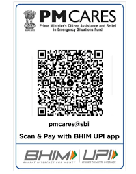

MakeDonations

JoinVolunteer

HelpChildren

How DonationsRow to Communities
When asking for donations in person, keep these tips in mind: Do research beforehand. Form a strong relationship before you make your ask. Meet them where they are. Practice your pitch. Communicate in a variety of ways. Be genuine, direct, and specific. Be prepared for rejections. Say thank you more than once. Our Row for a Cause fundraising platform not only makes us stronger physically, but also allows us to be stronger together through community.

How Can You Donate?
Many Ways To Give · Donate online · Bank Transfer · Stock Transfer · Cryptocurrency · Donor Advised Funds · In-Kind donations · Planned Giving · Event sponsorships.